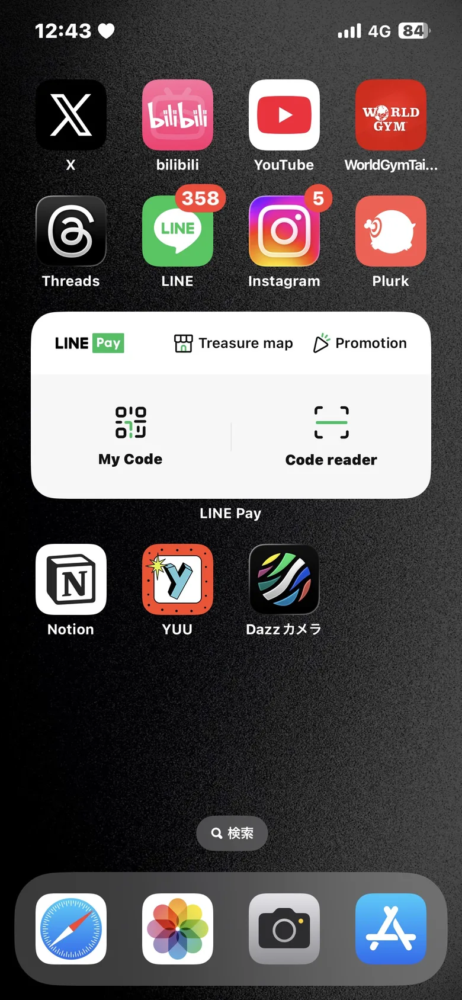

定位中…
要打開相機才能拍照喔
按下面的按鈕，然後在跳出的視窗選「允許」
為什麼你會回報這個浮根呢？可複選
這週的你
4.2 km·經過 128 棵行道樹·回報 0 次
中山北路的
浮根吹哨者
還沒有回報，去拍第一張吧！
我的回報紀錄
中山北路已經有 033+1 個回報紀錄啦！
點下面的大愛心，
送給中山北路的 33 位浮根吹哨者！
0 顆愛心已送出
連點看看！
ROOT ALERT 浮根警報 · 互動原型
iPhone：用 Safari 開啟 → 分享 → 加入主畫面，就能全螢幕展示